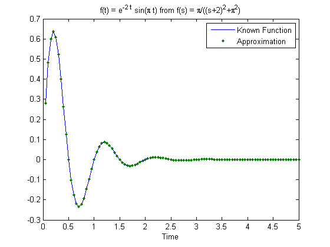
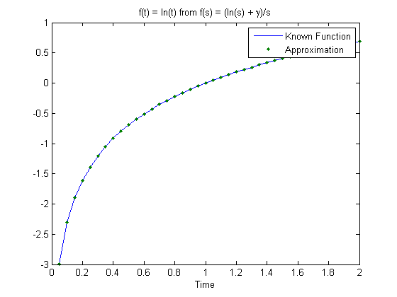
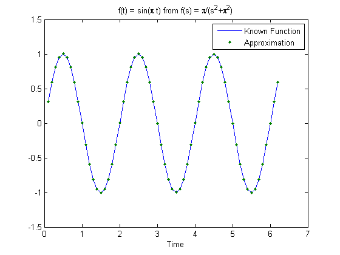
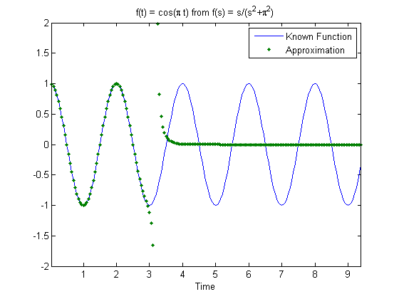
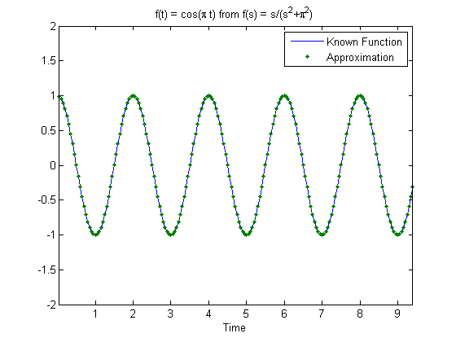
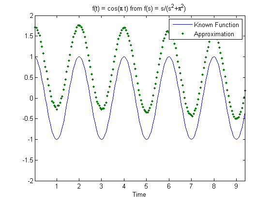
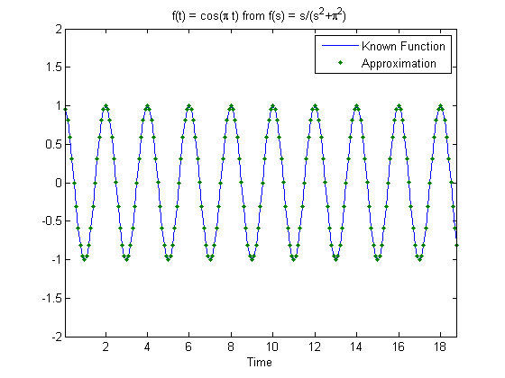

Examples of Numerical Approximation of the Inverse Laplace Transform
This script demonstrates using the included Talbot and Euler algorithms for numerical approximations of the inverse Laplace transform. The examples cover functions with known inverses so that the accuracy can easily be assessed.
Note that two versions of each algorithm are included, e.g. talbot_inversion.m and talbot_inversion_sym.m. The "_sym" suffix denotes that these functions use variable precision arithmetic, available in the Symbolic Toolbox™, for much, much greater precision. This is demonstrated below.
Tucker McClure @ The MathWorks Copyright 2012, The MathWorks, Inc.
Contents
Clear
close all; clear all; clc;
Step
A step function is simply 1/s. We can compare the numerical results to the exact results.
% First, define an anonymous function for our function of s. This could % also be a handle to a function stored in a .m file. E.g., if I had a % function called my_step.m, the below could be "fun = @my_step". If this % doesn't look familiar, check out "Function Handles" and "Anonymous % Functions" in the MATLAB documentation. fun = @(s) 1/s; % Define the times at which we want the inverse Laplace transform % evaluated. time = [1 10 100 1000 10000]'; % Just call one of the included functions. We'll try Talbot's algorithm. talbot_inversion(fun, time)' % We could try the Euler method as well and will get (very, very close to) % the same results. euler_inversion(fun, time)'
ans =
1.0000 1.0000 1.0000 1.0000 1.0000
ans =
1.0000 1.0000 1.0000 1.0000 1.0000
Ramp
Let's try a simple ramp with more compact notation, defining directly in the call to talbot_inversion both the function and the times at which we want the function evaluated.
talbot_inversion(@(s) 1/s^2, [1 10 100 1000 10000])'
ans =
1.0e+04 *
0.0001 0.0010 0.0100 0.1000 1.0000
Exponentially Decaying Sine
Let's plot the results along with the theoretical values for an exponentially decaying sine function.
t = 0.05:0.05:5; a = 2; w = 2*pi; plot(t, exp(-a*t) .* sin(w*t), ... t, euler_inversion(@(s) w/((s+a)^2+w^2), t), '.'); xlabel('Time'); title('f(t) = e^{-2 t} sin(\pi t) from f(s) = \pi/((s+2)^2+\pi^2)'); legend('Known Function', 'Approximation');
Natural Logarithm
We can try a natural logarithm too.
t = 0.05:0.05:2; gamma = 0.5772156649015328606065120900824024; plot(t, log(t), ... t, talbot_inversion(@(s) -1/s*(log(s) + gamma), t), '.'); xlabel('Time'); title('f(t) = ln(t) from f(s) = (ln(s) + \gamma)/s'); legend('Known Function', 'Approximation');
T = 0
Inverse Laplace transforms aren't defined for t = 0, but only t > 0.
talbot_inversion(@(s) 1/s, 0)
ans = NaN
Sine and Using "M"
Sine oscillates and is a bit trickier on these algorithms, but it works fine here. We specify an "M" parameter -- a higher M yields higher resolution, but if M gets too high, there can be problems. Here we'll use M = 32, and pass this as the third argument to euler_inversion.
t = 0.1:0.1:2*pi; w = pi; results = euler_inversion(@(s) w/(s^2+w^2), t, 32); plot(t, sin(w*t), ... t, results, '.'); xlabel('Time'); title('f(t) = sin(\pi t) from f(s) = \pi/(s^2+\pi^2)'); legend('Known Function', 'Approximation');
Cosine and Low M
When M isn't high enough, we see numerical problems.
t = 0.05:0.05:3*pi; w = pi; results = talbot_inversion(@(s) s/(s^2+w^2), t, 16); plot(t, cos(w*t), ... t, results, '.'); axis([t(1) t(end) -2 2]); xlabel('Time'); title('f(t) = cos(\pi t) from f(s) = s/(s^2+\pi^2)'); legend('Known Function', 'Approximation');
Cosine and Good M Selection
Increasing M allows us to increase the number of periods we can compute.
t = 0.05:0.05:3*pi; w = pi; results = talbot_inversion(@(s) s/(s^2+w^2), t, 64); plot(t, cos(w*t), ... t, results, '.'); axis([t(1) t(end) -2 2]); xlabel('Time'); title('f(t) = cos(\pi t) from f(s) = s/(s^2+\pi^2)'); legend('Known Function', 'Approximation');
Cosine and Large M Difficulty with Double Precision
We can't just set M arbitrarily high because the numerical precision required is greater than what doubles can provide.
t = 0.05:0.05:3*pi; w = pi; results = talbot_inversion(@(s) s/(s^2+w^2), t, 92); plot(t, cos(w*t), ... t, results, '.'); axis([t(1) t(end) -2 2]); xlabel('Time'); title('f(t) = cos(\pi t) from f(s) = s/(s^2+\pi^2)'); legend('Known Function', 'Approximation');
Cosine and Large M Accuracy with Variable Precision Arithmetic
Here, we need cosine calculated out very far. This is not possible with doubles. Therefore, we use the symbolic implementation of Talbot's method (the version that ends with "_sym") and simply specify the required M. The symbolic implementations are capable of arbitrary precision by using the "vpa" function. Note that this takes much longer but might be the only way to solve some problems. Variable precision arithmetic (and therefore this function) requires the Symbolic Toolbox.
t = 0.1:0.1:6*pi; w = pi; tic; % Start a timer. results = talbot_inversion_sym(@(s) s/(s^2+w^2), t, 128); toc; % Stop a timer. plot(t, cos(w*t), ... t, results, '.'); axis([t(1) t(end) -2 2]); xlabel('Time'); title('f(t) = cos(\pi t) from f(s) = s/(s^2+\pi^2)'); legend('Known Function', 'Approximation');
Elapsed time is 75.112335 seconds.
That's it! If you have any arbitrary function derived in s, you can use these methods to determine its response over time.
Appendix
For most realistic, difficult problems that people address, it's likely that the symbolic implementations are the best resource, despite the increased run time. These implementations are possible primarily due to the use of the vpa function mentioned above. How does this work? Let's suppose we want to use the binomial theorem for some very large numbers. This involves large factorials. For n choose k with normal double precision, we get:
n = 200; k = 199; factorial(n)/(factorial(k)*factorial(n-k))
ans = NaN
NaN! The calculation breaks down with huge products on top and bottom, resulting in numerical noise when using double precision. But instead let's make these numbers symbolic. Then the factorials can be carried out symbolically, allowing common terms on top and bottom to be canceled out. Then we can evaluate at the very end to the desired precision. (The binomial coefficients calculation here will result in an integer, so we won't actually see 32 significant digits because everything after the decimal will be 0), but we do get precisely 200, without round-off errors.
n = sym(200); k = sym(199); vpa(factorial(n)/(factorial(k)*factorial(n-k)), 32)
ans = 200.0
That worked as expected. The vpa function is actually used on binomial coefficients in euler_inversion_sym for precisely this type of exact answer, albeit in a more complicated equation. Here's a snippet of euler_inversion_sym, showing the use of vpa to evaluate code handled symbolically. Note that this uses vectorization, complex numbers, and even the mod operator, and this can all be handled symbolically gracefully!
% Binominal function bnml = @(n, z) factorial(n)/(factorial(z)*factorial(n-z));
xi = sym([0.5, ones(1, M), zeros(1, M-1), 2^-sym(M)]);
for k = 1:M-1
xi(2*M-k + 1) = xi(2*M-k + 2) + 2^-sym(M) * bnml(sym(M), sym(k));
end
k = sym(0:2*M); % Iteration index
beta = vpa(sym(M)*log(sym(10))/3 + 1i*pi*k, P);
eta = vpa((1-mod(k, 2)*2) .* xi, P);If you wish to understand these methods in more detail, be sure to look at this great summary of these techniques.
Abate, Joseph, and Ward Whitt. "A Unified Framework for Numerically Inverting Laplace Transforms." INFORMS Journal of Computing, vol. 18.4 (2006): 408-421. Print.